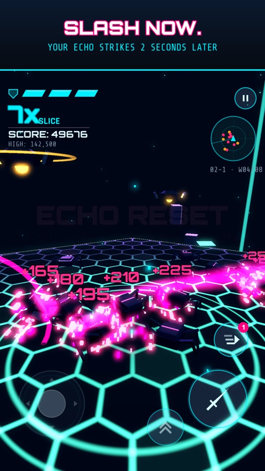
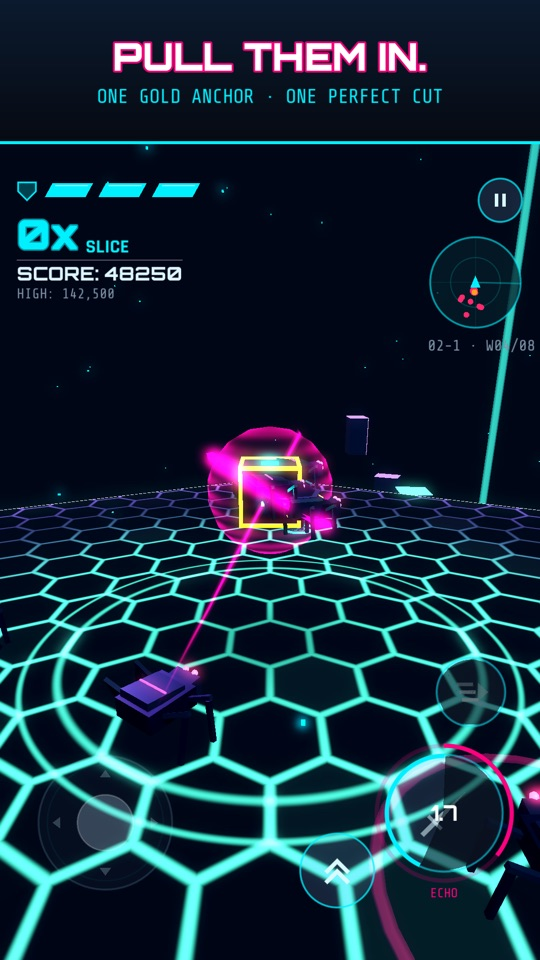
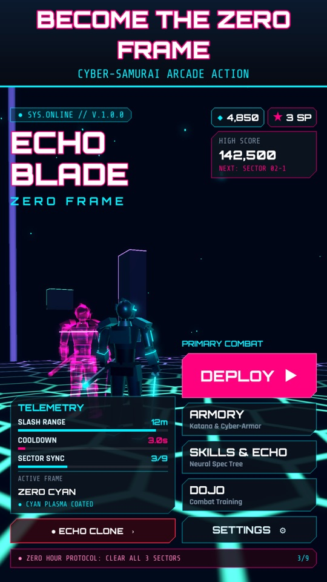

Echo Blade: Zero Frame
SLASH NOW. YOUR ECHO STRIKES LATER.
You are the Zero Frame, a cyber-samurai fighting drone swarms on a floating neon arena. Every slash marks the drones on its path, and two seconds later your Echo Clone replays it and cuts them all in half.



- Slash to mark, echo to cut: 3+ kills in one echo instantly reset your slash.
- 3 sectors, 9 stages and three sector guardians.
- Upgrades and loadouts: skill tree, armor frames, plasma blades and trail effects.
- Plays offline, no account needed.
Support
Questions, bugs or feedback: buidan.infotech@gmail.com
Your progress is saved on your device. Deleting the game deletes it.